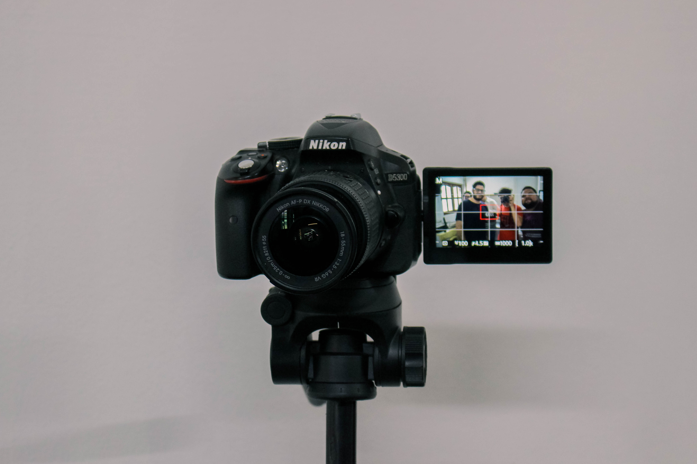
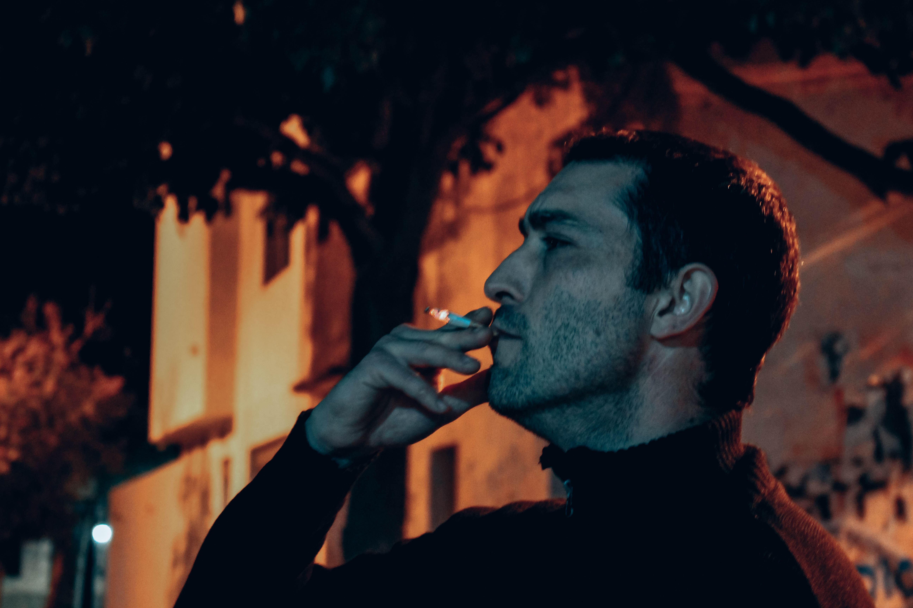
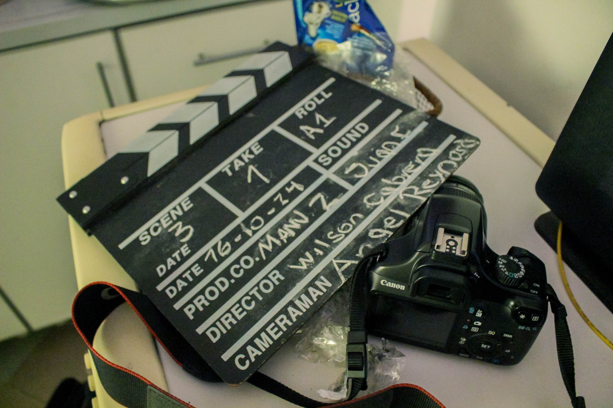
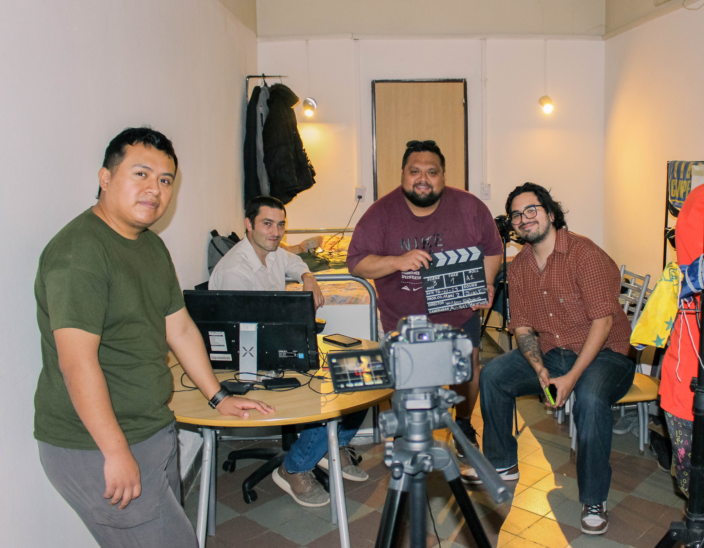
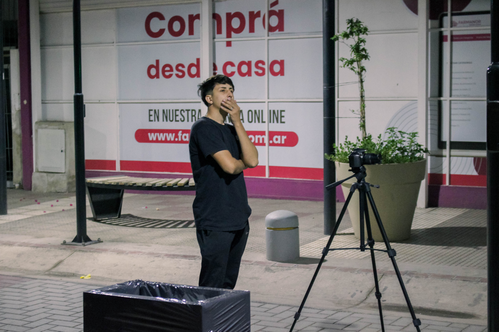

Tras perder a su hermano en un accidente, Santiago, un joven apasionado por la astronomía, comienza a percibir a Sirius, una entidad invisible para todos excepto él. Este enigma lo lleva a una búsqueda obsesiva que distorsiona su percepción de la realidad y lo empuja al borde de la locura dejando en duda si Sirius era real o solo un producto de su mente atormentada.
DESTACADOS DE LA SERIE
DETRÁS DE CÁMARAS




